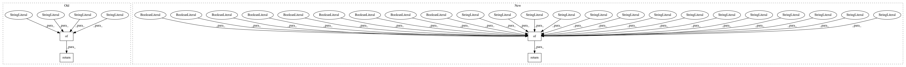

532acbc0a2c75bfe1f35fa5a667c2c1c650792b3,AutoSklearn/components/classification/libsvm_svc.py,LibSVM_SVC,get_meta_information,#,51
Before Change
@staticmethod
def get_meta_information():
return {"shortname": "LibSVM-SVC",
"name": "LibSVM Support Vector Classification"}
@staticmethod
def get_hyperparameter_search_space():
C = UniformFloatHyperparameter("C", 0.03125, 32768, log=True,
After Change
@staticmethod
def get_meta_information():
return {"shortname": "LibSVM-SVC",
"name": "LibSVM Support Vector Classification",
"handles_missing_values": False,
"handles_nominal_values": False,
"handles_numerical_features": True,
"prefers_data_scaled": True,
// TODO find out if this is good because of sparsity...
"prefers_data_normalized": False,
"handles_multiclass": True,
"handles_multilabel": False,
"is_deterministic": True,
// TODO find out of this is right!
// this here suggests so http://scikit-learn.org/stable/modules/svm.html//tips-on-practical-use
"handles_sparse": True,
// TODO find out what is best used here!
// C-continouos and double precision...
"preferred_dtype": None}
@staticmethod
def get_hyperparameter_search_space():
C = UniformFloatHyperparameter("C", 0.03125, 32768, log=True,
In pattern: SUPERPATTERN
Frequency: 3
Non-data size: 4
Instances
Project Name: automl/auto-sklearn
Commit Name: 532acbc0a2c75bfe1f35fa5a667c2c1c650792b3
Time: 2014-12-11
Author: feurerm@informatik.uni-freiburg.de
File Name: AutoSklearn/components/classification/libsvm_svc.py
Class Name: LibSVM_SVC
Method Name: get_meta_information
Project Name: automl/auto-sklearn
Commit Name: 532acbc0a2c75bfe1f35fa5a667c2c1c650792b3
Time: 2014-12-11
Author: feurerm@informatik.uni-freiburg.de
File Name: AutoSklearn/components/classification/liblinear.py
Class Name: LibLinear_SVC
Method Name: get_meta_information
Project Name: automl/auto-sklearn
Commit Name: 532acbc0a2c75bfe1f35fa5a667c2c1c650792b3
Time: 2014-12-11
Author: feurerm@informatik.uni-freiburg.de
File Name: AutoSklearn/components/classification/random_forest.py
Class Name: RandomForest
Method Name: get_meta_information